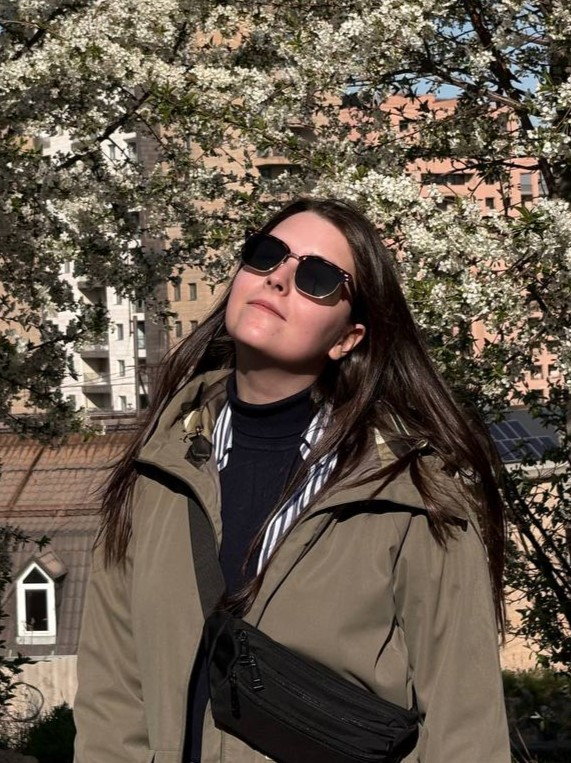
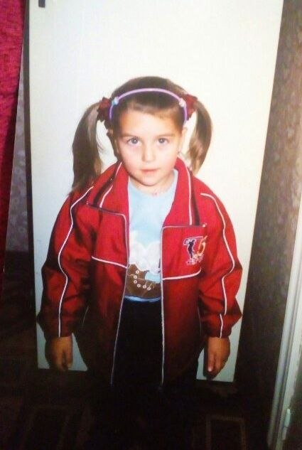
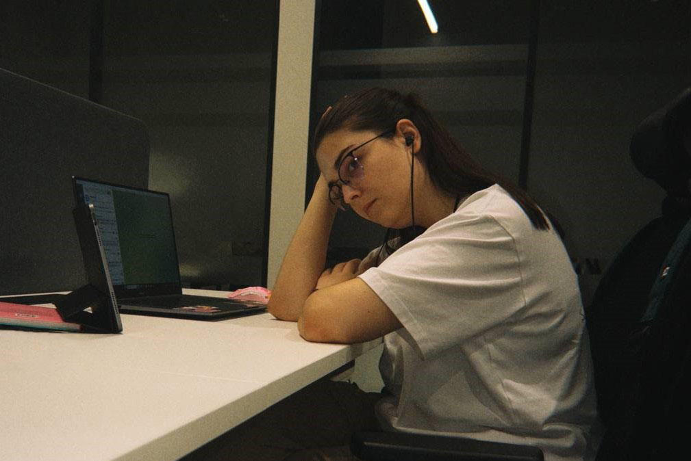

Привет!
Меня зовут Вера, я продюсер анимации в рекламе.
Более трёх лет работаю с разными агентствами и продакшенами. Вела проекты для Авито, Яндекса, X5 и других брендов.
Я умею сложное делать простым: прозрачно объяснять процессы и ценообразование клиентам, структурировать хранение файлов проекта, выстраивать пайплайн так, чтобы дедлайны не горели.
Короче — я из тех, кто наводит порядок и получает от этого удовольствие.
Сметы, тайминги, ТЗ, письма клиентам. Если что‑то можно разложить по полочкам, я это разложу.
Контролирую процессы от брифа до финального рендера.
Анализирую проект на старте, продумываю пайплайн и заранее проговариваю с клиентом, где могут быть ограничения. Большинство проблем решаются до того, как становятся проблемами.
Не только веду проекты, но и настраиваю то, как они ведутся. Разрабатываю и оптимизирую шаблоны, регламенты, онбординг команды.
Я показала четыре проекта, разных по задачам и форматам, — это срез того, чем я занимаюсь чаще всего. В портфолио работ гораздо больше, но я не захотела нагружать ими сайт. Если хочется посмотреть больше — напишите, с радостью поделюсь.
Если вы ищете продюсера, который возьмёт проект и не потеряет его по дороге — напишите мне.


